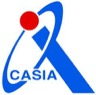

欢迎来到我的主页！
我目前是 AWS Kiro IDE
 的软件工程师。
的软件工程师。
在产品工程之外，我也在科罗拉多大学安舒茨医学院参与医疗影像与 AI 智能体研究。
我的研究方向和目标是用 AI 革新医疗体验、提高医院分诊效率，并探索可信赖、参数高效的 AI 医学辅助系统。近期我在探索 EHR 患者世界模型与循环世界模型，并开发可靠的医学智能体系统，以及用于医学世界模型训练的大规模数据处理基础设施。EHR2Trace).
在科罗拉多大学安舒茨医学院，我的导师是 Prof. Harrison Bai 和 Prof. Yuli Wang。在布朗大学期间，我的导师是 Prof. Zhicheng Jiao。在北京科技大学期间，导师为 Prof. Cheng Chen 和 Prof. Ruoxiu Xiao。更早之前，我在中国科学院自动化研究所

开发实时 ICU 患者监护系统，导师为 Prof. Hongjun Yang 和 Prof. Zengguang Hou。研究方向: 多模态大模型 · 医学影像分析 · 医疗 AI · 智能代理
经历亮点:
- 持续演进 LLM 上下文与记忆系统（压缩、检索、令牌预算下的上下文调度），在保证回复质量的同时降低推理成本与延迟。
- 实习期间设计并落地 Kiro IDE 核心分布式上下文压缩系统：层次化压缩，压缩率达 80–90%，并推动产品上线、服务 10 万以上用户。
- 开源项目 KiroCrew（基于 kiro-cli 与 Agent Client Protocol 的多智能体工作空间）贡献者：改进会话恢复韧性、信息脱敏与沙箱机制。
- 面向医学影像与临床决策支持的可靠 AI 研究，涵盖模型评估、不确定性感知分诊与云边协同部署，并拥有一项智能放射报告平台的美国临时专利。
- 更早之前，在中国科学院自动化研究所开发实时 ICU 患者监护系统，获软件专利与国家级项目资助。
欢迎联系我，聊聊 AI 产品、开发者工具或医疗 AI！
动态
- 2026.07: 🚀 全职加入 AWS Kiro，任软件开发工程师（西雅图）！
- 2026.07: 🔬 开始在科罗拉多大学安舒茨医学院担任研究助理。
- 2026: 🎉 关于胸片视觉语言模型可靠性压力测试与决策时路由的论文发表于 IEEE/ACM CHASE 2026，并入选口头报告（Oral）🏅！
- 2026: 🎉 关于医学影像置信度门控云边级联分诊的论文发表于 Smart Health，并入选口头报告（Oral）🏅！
- 2026.05: 🎓 获得布朗大学计算机科学硕士学位！
- 2025.07: 📄 放射报告生成与以临床医生为中心的 AI 评估统一平台在 medRxiv 发布。
- 2025.06: 💻 以软件工程师实习生身份加入 AWS Kiro，负责智能编程的上下文管理。
- 2025.03: 🏥 加入布朗大学健康中心，担任 AI 医学影像研究实习生。
- 2024.09: 🎓 进入布朗大学攻读计算机科学硕士！
- 2024.07: 🏅 从北京科技大学毕业，并获得人工智能学院院长奖章。
论文
完整论文列表请见我的 Google Scholar.
引用: 47 · h-index: 2 · i10-index: 1 · 更新于 2026 年 9 月
Reliability Stress Tests and Decision-Time Routing for Chest X-ray Vision-Language Models
2026 IEEE/ACM Conference on Connected Health: Applications, Systems and Technologies, 2026
Confidence-gated cloud-edge cascade triage via variational risk minimization for medical imaging
Smart Health · 100689, 2026
A Unified Platform for Radiology Report Generation and Clinician-Centered AI Evaluation
medRxiv · 2025.07.07.25331018, 2025 · 引用 1
Meta-Radiology · 100199, 2025
Understanding the brain with attention: A survey of transformers in brain sciences
Brain-X · 1(3), e29, 2023 · 引用 44
Optimization of CNN for Diagnosis on Lung Disease by Lung Segmentation and Rib Suppression
15th International Symposium on Computational Intelligence and Design, 2022 · 引用 2
博客
- 2026.09 · Stress-Testing Chest X-ray Vision-Language Models Before Deployment
胸片视觉语言模型上线前怎么做压力测试：提示词、工作流、评价指标，以及何时升级到多智能体流程。 - 2026.09 · How to Keep Data Lineage When Building EHR Training Datasets
构建可审计的 EHR 训练数据的八条做法：从行级来源 ID 到检查最终交付的数据。
经历
- 2026.07 – 至今, 软件开发工程师, 亚马逊云服务 · Kiro

 , 华盛顿州西雅图. 详情
, 华盛顿州西雅图. 详情 - 2026.07 – 至今, 研究助理, 科罗拉多大学安舒茨医学院, 远程. 导师： Prof. Harrison Bai 和 Prof. Yuli Wang。 详情
- 2025.06 – 2025.08, 软件开发工程师实习生, 亚马逊云服务 · Kiro, 华盛顿州西雅图. 详情
- 2025.03 – 2025.08, 研究实习生, 布朗大学健康中心, 罗德岛州普罗维登斯. 详情
- 2024.09 – 2025.08, 私人教练, 布朗大学体育部. 详情
- 2024.12 – 2025.02, 首席 Web 开发工程师兼设计师, 罗德岛以色列联盟. 详情
- 2024.05 – 2024.08, 算法工程实习生, 数坤科技. 详情
- 2023.05 – 2024.05, 软件与机器学习工程实习生, 中国科学院自动化研究所. 导师： Prof. Hongjun Yang 和 Prof. Zengguang Hou。 详情
- 2023.05 – 2023.08, 研究实习生, 北京科技大学. 详情
- 2022.07 – 2022.09, 研究实习生, 南洋理工大学. 详情
教育
- 2024.09 – 2026.05, 计算机科学理学硕士, 布朗大学, 美国罗德岛州普罗维登斯. 导师： Prof. Zhicheng Jiao。 详情
- 2020.09 – 2024.07, 人工智能工程学士, 北京科技大学, 中国北京. 荣誉毕业，GPA 3.83/4.0。 详情
荣誉与奖项
- 专利: 智能放射报告平台美国临时专利；实时 ICU 患者监护系统软件专利（中国科学院自动化研究所）。
- 2024: 北京科技大学人工智能学院院长奖章。
技能
- 编程语言: TypeScript · JavaScript · Python · Java · C/C++ · SQL · Go
- AI 与数据: LLM Systems · RAG · MCP · PyTorch · TensorFlow · Computer Vision
- 框架: React · Node.js · Flask · Spring Boot · MySQL
- 工具: AWS · Docker · Git · Google Cloud · Vite · Figma
学术服务
- 期刊审稿人: IEEE Internet of Things Journal · IEEE Transactions on Biomedical Engineering · Quantitative Imaging in Medicine and Surgery
- 志愿者: CHASE 2026